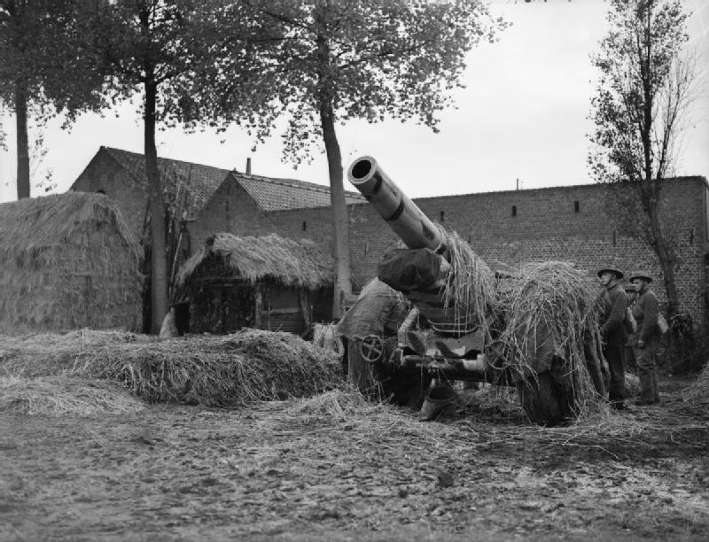
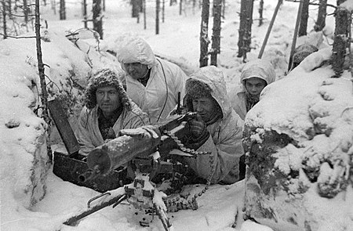

Fall Weis
 Op 31 augustus vallen Duitse strijdkrachten Polen binnen (Fall Weis).
Het Duitse leger maakte gebruik van 'Blitzkrieg' tactieken (bliksemoorlog).
Door grote mobiliteit konden zij grote enorme Poolse legers omcirkelen en vernietigen.
Niet alleen op land boekten Duitse strijdkrachten grote sucessen, maar ook in de lucht.
Warschau was tot een grote pulp gebombardeerd door duitse bommenwerpers.
Er was bijna niks meer over van de stad.
Invasion of Poland
Op 31 augustus vallen Duitse strijdkrachten Polen binnen (Fall Weis).
Het Duitse leger maakte gebruik van 'Blitzkrieg' tactieken (bliksemoorlog).
Door grote mobiliteit konden zij grote enorme Poolse legers omcirkelen en vernietigen.
Niet alleen op land boekten Duitse strijdkrachten grote sucessen, maar ook in de lucht.
Warschau was tot een grote pulp gebombardeerd door duitse bommenwerpers.
Er was bijna niks meer over van de stad.
Invasion of Poland
Polen wordt ingesloten
 Op 17 september vielen Sovjet troepen polen binnen vanuit het Oosten.
Vorige maand hadden de Nazi's en Sovjets een overeenkomst gesloten dat Oost-Europa zou worden verdeeld in verschillende invloedzones.
De Sovjets zouden vrij spel krijgen in de Baltische landen, Finland en Oost-Polen en Duitsland zou vrij spel krijgen in de rest van Europa zonder dreiging van de Sovjet-Unie.
Op 27 September gaf de Poolse garnizoen in Warschau zich over en de laatste grote eenheid van het Poolse leger gaf zich op 6 oktober over.
Op 17 september vielen Sovjet troepen polen binnen vanuit het Oosten.
Vorige maand hadden de Nazi's en Sovjets een overeenkomst gesloten dat Oost-Europa zou worden verdeeld in verschillende invloedzones.
De Sovjets zouden vrij spel krijgen in de Baltische landen, Finland en Oost-Polen en Duitsland zou vrij spel krijgen in de rest van Europa zonder dreiging van de Sovjet-Unie.
Op 27 September gaf de Poolse garnizoen in Warschau zich over en de laatste grote eenheid van het Poolse leger gaf zich op 6 oktober over.
Weinig actie
 Nadat Polen was gevallen, werd de oorlog kalm. Franse troepen waren wel een offensief begonnen in het Saarland en hoewel dat redelijk goed verliep, besloten ze toch zich terug te trekken naar de Maginot Linie, maar Op zee begonnen Duitse onderzeeboten (U-Boats) Britse konvooien aan te vallen. The Forgotten 1939 Invasion of Germany
De Winter Oorlog
 Op 30 november 1939 vielen Sovjet-troepen Finland binnen. Stalin was bang dat Finland een verassingsaanval zou plegen en Leningrad zou innemen aangezien de stad Leningrad vlakbij de Finse grens gelegen was. Hij wilde de Russische-Finse grens verder opschuiven, maar de Finnen waren het daar niet mee eens en dus verklaarde Stalin de oorlog aan Finland. De oorlog verliep in het begin catastrofaal voor de Sovjets. De Finse strijdkrachten maakten goed gebruik van hun eigen grondgebied. Russiche tanks liepen vaak vast op ijs en aangevallen in dichte bossen met molotov cocktails. Finland hield maar een paar maanden vol tot op 13 maart er een einde aan de oorlog kwam. De Sovjet-Unie annexeerde 12,5% van Fins grondgebied, met name de grensgebieden. The Winter War